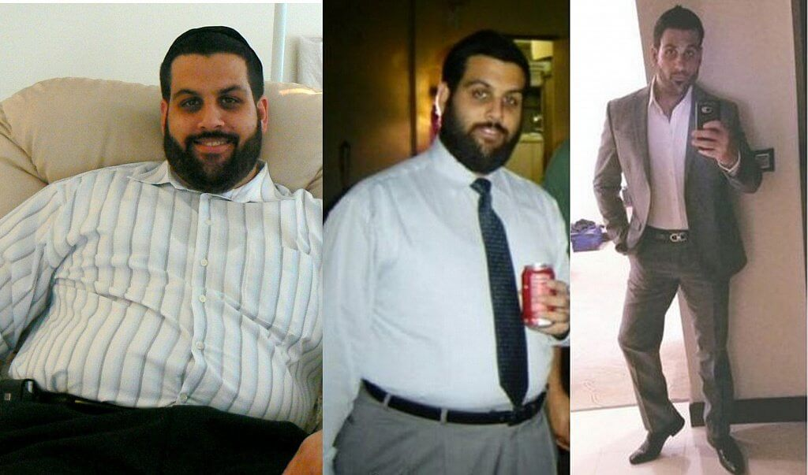
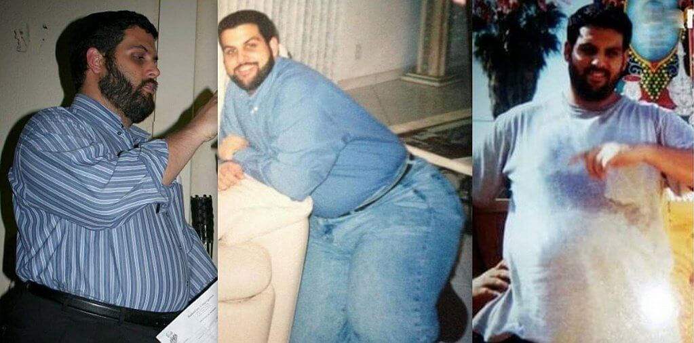
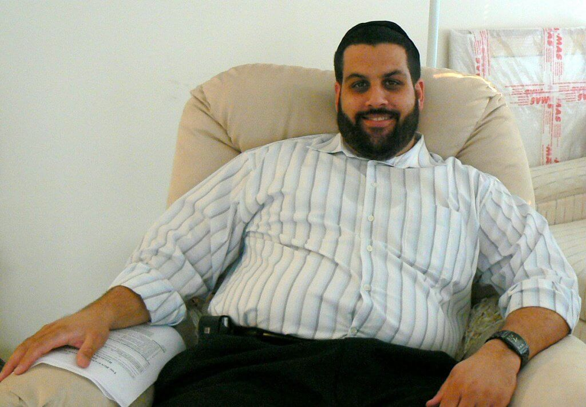
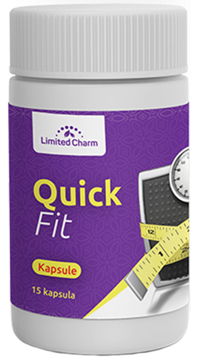
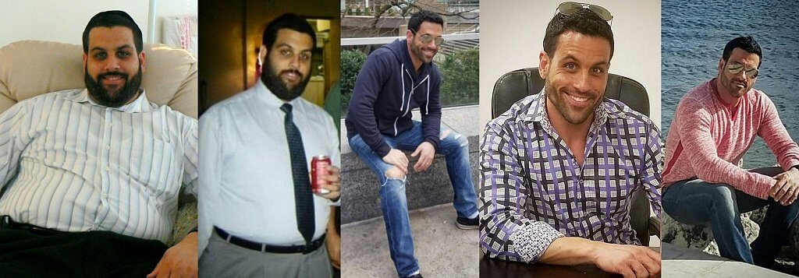
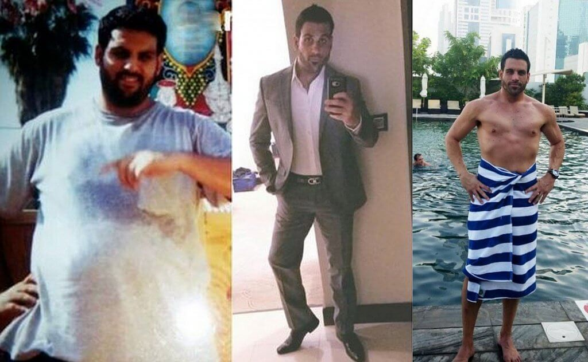
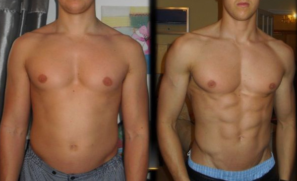
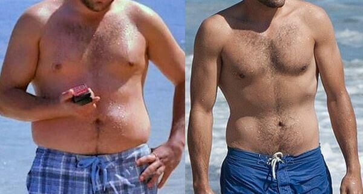
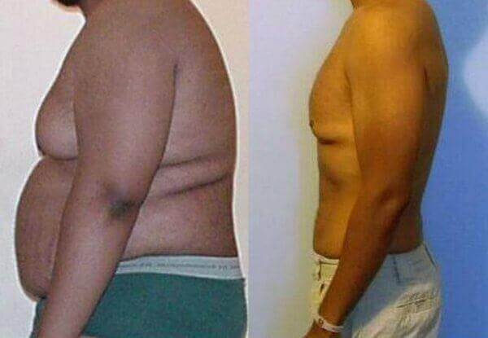

- Dominik
- 115 komment
- 227 710 megtekintés
Hogyan fogyjon le 45 kilót diéták és edzés nélkül
Ez a módszer abban segít, hogy heti szinten 15 kilót fogyjon, GYORSAN ÉS BIZTONSÁGOSAN
Sziasztok! Mint mindig, most is Barna Dominik van veletek. Sikerült lefogynom, a majdnem ismeretlen módszerrel, és valószínűleg ez a bejegyzés hamarosan törölve lesz. Ez az új módszer igazi találmány a táplálkozásban. Sok dietetikus próbálta sikertelenül eltitkolni ezt a felfedezést, mert a nyilvánosságra hozása sok problémát jelentene számukra. Sok pénzt és időt pazaroltam el különböző diétákra, edzésekre személyi edzővel. De semmi sem segített. Találtam egy másik megoldást, amely annyira egyszerűnek és megfizethetőnek bizonyult, hogy nehéz elhinni. Most szeretném felfedni a titkot mindenkinek, akinek problémái vannak a túlsúllyal és az egészséggel.
Itt az én történetem:
Mindig is szerettem enni, ezért gyerekkorom óta túlsúlyos voltam.A legjobban szerettem a gyorskaját enni TV nézés közben, munka után. A feleségem ezt sosem csinálta, igaz nem is volt ellenére. De, észrevettük, hogy a 25 testem hihetetlenül gyorsan nőtt, főleg a hasam. Csak akkor fogtam fel, hogy mennyire túlsúlyos vagyok és úgy nézek ki mint egy dagadt disznó. 33 évesen 125 kg voltam ami 46 kg-val több, mint, ami normális lenne a magasságomhoz.
Ezek mellett több egészségügyi problémám is volt. A hasnyálmirigy tájékán szörnyű fájdalmakat éreztem. Mindig fáradt voltam, túlságosan izzadtam, és nehezen lélegeztem. A legrosszabb az volt, hogy impotens lettem.. Hogy őszinte legyek, a nagy hasam eltakarta a "férfiasságomat" sokáig. Az impotencia nagyban befolyásolta a családi életemet. A feleségemmel gyakran veszekedtünk. Nem sikerült kielégítenem a feleségem, ami nagy csapás volt az önbizalmamra. Útáltam magam, és igazi vesztesnek éreztem magam.
Elmentem a kórházba, orvosi vizsgálatokra, az eredmények katasztrofálisak voltak. A testem nagy veszélyben volt, nagy volt az esély rá, hogy diabéteszes legyek. A több éves gyorsételfogyasztás kivégezte a testemet, főleg a hasnyálmirigyemet.
Elkezdtem egy szigorú fogyókúrát. Amikor egész életetekben azt eszitek, amit szerettek, a fogyókúra nagyon nagy lelki megpróbáltatás lehet. Minden héten ráálltam a mérlegre, remélve, hogy a kinlódásom nem hiábavaló. De, a mérleg mindig a 125,9 kg-t mutatta. 3 hónap után ógy döntöttem, hogy elkezdek edzeni is, így megindultam edzőterembe is. Az edző azt mondta, hogy a súlyom csak kb.6 hónap után fog kezdeni csökkenni nem volt szabad keményen edzenem. Ezért csak egyszerő gyakorlatokat csináltam, mint a séta a futópadon, lassú kerékpározás, guggolások, ugrások. Az is nehezemre esett, hogy 10 guggolást megcsináljak. Mindig légszomjam volt, és szédültem. A többi ember az edzőteremben csak kinevetett. Egyezek vele, hogy nevetséges amikor valaki, nagydarab idióta küzd a levegőért, és izzad edzés közben olyan gyakorlatokat csinálva, amit egy nyugdíjas is simán megcsinálna.
Ezek voltak a legnehezebb pillanatok az életemben. Mindig éhes voltam. Még álmodtam is az ételekről. Egyfolytában ideges voltam. Talán kicsit könnyebb lett volna, ha a feleségem támogatott volna, de csak idegesítettem. Mindig csak veszekedtünk, mindig szörnyű dolgokat mondott. Mindig "kövér disznónak", "vesztesnek" hívott, és azt mondogatta, hogy: "Soha sem tudsz majd így kielégíteni". Ez katasztrófa volt. A saját feleségem nem hitt bennem. Gyorsan talált is magának másik férfit, és elhagyott. Válni akart.
Ezek után igyekeztem szigorúan betartani a fogyókúrát, és hogy minél többet edzzek. A mérleg egy hónap után, megint csak 125 kg-ot mutatott. Felhagytam a fogyókúrával. Ismét elkezdtem enni a gyorskaját ugyanolyan szenvedéllyel, mint régen.
Akkor még élni sem akartam. Megöltem volna magam, ha nem lett volna a barátom Ármin. Ő mentett meg. Átköltöztem hozzá, hogy könnyebben leküzdjem a depressziót. Mindent elmeséltem neki, amit sokáig magamban tartottam. Szégyeltem magam, hogy felnőtt ember létemre, úgy sírok mint egy kisgyerek. De hihetetlenül nehéz volt azzal élni. Ármin együttérzett velem. Türelmesen végighallgatott és azt mondta: "Miért nem mondtad ezt el hamarabb?" Létezik egy sokkal egyszerűbb és biztonságosabb módja a fogyásnak. Itt van a megoldás a problémádra. Már egy ideje használom és tényleg segít." Amint ezt elmondta, adott egy kis dobozkát . felirattal. Azt mondta, hogy természetes termék, a fogyásra és az anyagcsere serkentésére, javítására.
Nehéz volt elhinni, de végül tettem egy próbát. Ármin is mindig gyorskaján élt, és más egészségtelen dolgot fogyasztott, de mindig jó formában volt és egészséges volt. Elkezdtem kutatni az interneten, további információkat kerestem a -ről, és elkezdtem fogyasztani, ahogy elő van írva. Egyszerűen, napi háromszor ittam a -et étkezés előtt. Őszintén semmi jóban nem reménykedtem. Nem is gondoltam, hogy le lehet fogyni fogyókúra és edzés nélkül.
Az eredményem:
A Hét napi fogyasztása után a testúlyom ugyanannyi volt, de kezdtem sokkal jobban érezni magam. Több erőm és energiám volt. 14 nap után sokk ért. Lefogytam 9,3 kg-t annak ellenére, hogy azt ettem amit csak akartam! Egyszerűen lefogytam, bármiféle lemondások nélkül! Hihetetlen!
Még 7 nap után sikerült még lefogynom 8,5 kg-t! A súlyom csak úgy olvadt, szó szerint a 2,5 hónap alatt.
Nap mint nap több energiám volt, és a hasnyálmirigyem sem fájt. Az impotenciával sem volt már gondom. Ahogy befejeződött a detoxikációs folyamat, az erekcióm erősebb és tartósabb lett. (az aktusaim átlagos ideje most 40-60 perc). Mind emellett, a nők elkezdtek felfigyelni rám. Tényleg hihetetlen! Váratlanul a volt feleségem felkeresett, és békülni akart. Bocsánatot kért, sajnálta ami történt, de én már semmit sem éreztem iránta.
A egy kapszula, amit naponta többször kell fogyasztani. Ahogy értettem, ennek a terméknek összetett hatékonysága van:
- Tisztítja a szervezetet a toxikus anyagoktól, és a vérből a cukrot és a koleszterint;
- Égeti a zsírt;
- Csökkenti az étvágyat;
- Gyorsítja az anyagcserét, ami leállítja a felesleg kilók gyarapodását;
Én is csak akkor hittem el, amikor elmentem az orvosi vizsgálatra, és kiderült, hogy teljesen egészséges vagyok. A gyártók igérete igaz volt. A cukor-és a koleszterin szint normál értékű volt, pedig azt és annyit ettem amit akartam. Feltételezem minden férfi ezt akarja.
A fogyasztásával 3 hónap alatt sikerült lefogynom 45 kg-t most 79 kg vagyok.
Ez a termék nem okoz függőséget. Csináltam egy nagyobb szünetet a fogyasztás után, és most is jól érzem magam. Ez mellett, a leadott kilók nem jöttek vissza. Most stabil a testsúlyom, még mindig 79 kg vagyok.
Itt van a link a hivatalos weboldalára mindazoknak, akik fogyni szeretnének gyorsan és könnyen mint én. Igyátok a -et és javítsátok az egészségeteket és az életminőségeteket. Ez a termék kifejezetten olcsó ha azt vesszük, hogy milyen eredményeket kapunk cserébe. SZERETNÉM HA TUDNÁTOK, HOGY EZ az egyetlen weboldal ahol az eredeti terméket meg tudjátok rendelni. Más oldalakon hamis termékeket árulnak, amik nem hatásosak. Sok ilyen oldal van. Amikor a -et rendeltem, a hivatalos oldalon, nem kellett előre fizetni. Csak amikor átvettem a csomagot akkor fizettem érte. Szeretném még hozzáadni, hogy a kiszállítás gyors. A csomag már másnap megérkezett.
Ha úgy döntöttetek, hogy megrendelitek a -et, azt ajánlom tegyétek meg most. mert az eladás meg fog szűnni
A hihetetlenül jobbá tette az életemet. Elégedett vagyok a kinézetemmel, egészséges vagyok, és élvezem a nők figyelmét. Meg kellett veletek osztanom a tapasztalataimat. Ne kínozzátok magatokat fogyókúrákkal! Tegyél magadért! Sok sikert!
Köszönöm a figyelmet! :) Dominik


Kommentek
Épp infókat kerestem a -ről. Köszi a részletes leírást!
Teljesen igaz minden!Egy éve ittam ezt a terméket és lefogytam 19 kilót egy hónap alatt! Minden nap fogytam! Egy év után, a testsúlyom még mindig ugyanannyi! 49 kg! kiló vagyok!
Iszom a -et, itt rendeltem nagyon kedvező áron. Hatásos! Nagyon jól érzem magam és tartós és kőkemény erekcióm van. Ez mellett, 26 kilót fogytam. Kitűnő!

Teljesen egyetértek! A tényleg segít! a zsírpárnák a hasamról eltűntek szó szerint egy hónap alatt!
Az erekció mindenképp erősebb és tartósabb lesz amikor a test megtisztul a toxikus anyagoktól.
Rendelte ezt már valaki? Meddig tart a kiszállítás?
Megrendeltem a hivatalos weboldalon. A kiszállítás nagyon gyors, csak 2 napot vártam a csomagra. Az edzőm ajánlotta, hogy igyam ezt. Az eredmények nagyon jók! Lefogytam 31 kg-t 2,5 hónap alatt.
Láttam, hogy a tv-ben ismert orvosok is beszélnek erről a termékről! Azt mondják, hogy az esetek 98%-ában a túlsúly az endokrin problémák okozója, a magas vércukorszint, magas koleszterinszint, lassú anyagcsere... Úgy tűnik, hogy a mesék a termék hatékonyságáról igazak.